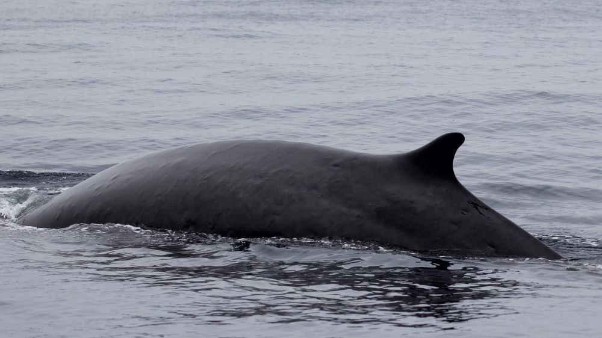

Male fin whales surprise scientists by swapping songs
aperture':'0','credit':'','camera':'','caption':'','created_timestamp':'1603183001','copyright':'','focal_length':'0','iso':'0','shutter_speed':'0','title':'','orientation':'1'}' data-image-title='frontiers-marine-science-fin-whale-song' data-large-file='https://frontiersinblog.files.wordpress.com/2020/10/frontiers-marine-science-fin-whale-song.jpg?w=940' data-medium-file='https://frontiersinblog.files.wordpress.com/2020/10/frontiers-marine-science-fin-whale-song.jpg?w=300' data-orig-file='https://frontiersinblog.files.wordpress.com/2020/10/frontiers-marine-science-fin-whale-song.jpg' data-orig-size='1000,562' data-permalink='https://blog.frontiersin.org/2020/10/29/marine-science-fin-whale-song/frontiers-marine-science-fin-whale-song/' sizes='(max-width: 1000px) 100vw, 1000px' src='https://frontiersinblog.files.wordpress.com/2020/10/frontiers-marine-science-fin-whale-song.jpg' srcset='https://frontiersinblog.files.wordpress.com/2020/10/frontiers-marine-science-fin-whale-song.jpg 1000w, https://frontiersinblog.files.wordpress.com/2020/10/frontiers-marine-science-fin-whale-song.jpg?w=150 150w, https://frontiersinblog.files.wordpress.com/2020/10/frontiers-marine-science-fin-whale-song.jpg?w=300 300w, https://frontiersinblog.files.wordpress.com/2020/10/frontiers-marine-science-fin-whale-song.jpg?w=768 768w'>
Posted On: 2020-10-29T00:00:00
Posted By: Sarah Yardley

Content Date: 2020-10-29
Download Date: 2021-07-10
Document ID: L0C04F3F7